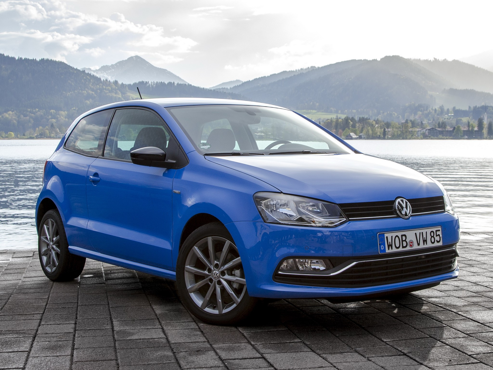
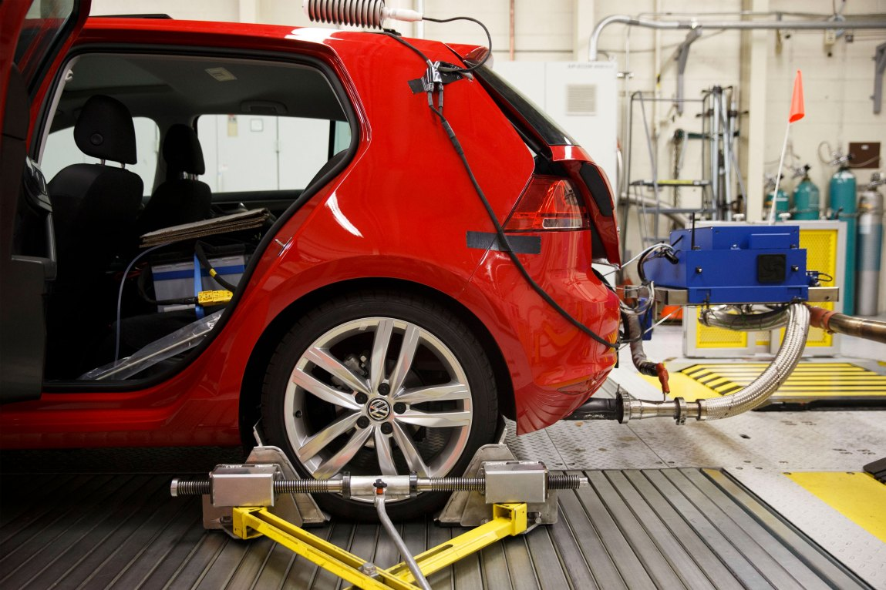
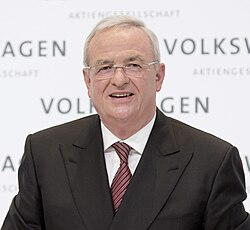
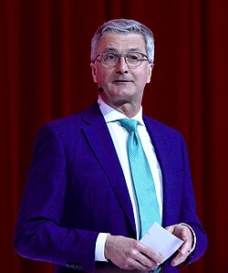

Between 2009 and 2015, Volkswagen fitted 11 million diesel vehicles with software designed to cheat emissions tests. The vehicles passed every lab test while emitting up to 40 times the legal limit on the road. The fallout included more than $30 billion in fines, 59 premature deaths in the US alone, the resignation of the CEO, and prison sentences for senior engineers. This is not a story about bad people. It is a story about what happens when an obsession with growth meets a culture where no one feels safe enough to say it cannot be done.
Based on INSEAD Case IN1465: Volkswagen’s Emissions Scandal: How Could It Happen?
Erin McCormick & Prof. N. Craig Smith · oikos Case Writing Competition 2018 (2nd Prize, Corporate Sustainability)

Ferdinand Piëch, VW’s patriarch and chairman of the supervisory board, installs Martin Winterkorn as CEO of Volkswagen AG. A trained physicist and obsessive perfectionist, known for crawling under competitors’ cars at motor shows with a ruler. He launches Strategy 2018: make VW the largest automaker in the world by 2018, selling 10 million vehicles per year.
The Clean Diesel advertising campaign launches in the US to great success, winning a Cannes Lion Grand Prix award and Motor Trend Car of the Year. It becomes one of the most celebrated automotive campaigns of the decade.
VW becomes the fastest-growing automotive brand in America. Almost 450,000 TDI vehicles sold in the US alone. 11 million affected worldwide, including 8 million across Europe.
In 2005, VW engineers were handed one brief. Hit US NOx limits while matching European performance. The US standard was 11× stricter than Europe's equivalent.
To reduce NOx you run the engine cooler, which kills performance and fuel economy. Every supplier VW approached reached the same conclusion. GM engineers, using VW's own parts: “We couldn't come anywhere close. It can't be done.”
Bosch, who supplied the engine management software, sent VW a written warning that using the software in this configuration outside of test conditions would be illegal.
Engineers escalated the problem and were overridden. In a culture where “it can’t be done” was not an acceptable answer, the defeat device became the response to an impossible instruction from the top.

Three grad students from West Virginia University drive a VW Jetta across the US with a portable emissions device. NOx readings up to 40× the legal limit. The same cars had passed every EPA lab test.
VW tells California regulators the testing equipment was faulty and issues a voluntary recall. The software update has zero effect on real-world emissions.
CARB gives VW 4 separate opportunities to come clean over 18 months. All declined. Oliver Schmidt personally assures regulators the vehicles are compliant.
VW privately admits the defeat device is real. They ask the EPA for a quiet resolution. The EPA declines.
The EPA publishes a formal Notice of Violation. Three days later, VW admits the defeat device was installed in 11 million vehicles worldwide.
The largest corporate criminal penalty in US automotive history. 450,000 vehicles bought back in the US alone.
An MIT study linked excess NOx emissions to 59 premature deaths. Nitrogen dioxide exposure causes asthma, heart disease, and early mortality.
Winterkorn resigned within five days. Oliver Schmidt was arrested at Miami airport and sentenced to seven years. Of roughly 40 suspects, only two faced US charges.
Consumer confidence in diesel collapsed across Europe and North America. TDI sales were discontinued in the US.
Liang knew the defeat device was illegal. He stayed silent for a decade. His attorney told the court: “He wasn’t the mastermind. He was blindly executing misguided loyalty.” He served 40 months in federal prison.
Pamio cooperated with German authorities and disclosed that senior Audi managers knew about the defeat device as early as 2006, when Winterkorn was running Audi and Matthias Müller headed project management.
Schmidt flew to California to personally assure regulators VW’s vehicles were compliant. They were not. He was arrested at Miami International Airport and sentenced to seven years in federal prison.
Strategy 2018 demanded 10 million vehicles per year. It arrived without guardrails, without compliance floors, without a definition of acceptable methods. When the engineering team said the US NOx target was physically impossible, they were overridden.(Bach & Allen 2010)
Professor David Bach of Yale put it simply. “Stretch goals are very useful. Precisely because they generate a lot of pressure, you have to make sure they are coupled with a clear sense of what the boundaries are. That was just missing at Volkswagen.”
“Do it, or I'll find someone who can.”Ferdinand Piëch
Winterkorn publicly humiliated executives at motor shows. Piëch fired whole teams to make a point. In that culture, raising a problem was career suicide.(McCormick & Smith 2018)
Bob Lutz, former Vice Chairman of GM, described it as a “reign of terror.” He recounted Piëch explaining his approach to innovation: call all engineers into a room and tell them if they could not find a new way to do the job in six weeks, they would all be fired. “You know your problem, Mr. Lutz? You’re way too soft. When I want something, I get it.”
“VW had this special culture. It was like North Korea without the labour camps.”Former VW management trainee
Dozens of engineers knew the defeat device was illegal. None went to a regulator. The supervisory board had one independent member out of twenty.(Brown & Treviño 2006)
“The board was only really there for show. They lacked the ability to ask any deep technical questions.”Former VW executive, Financial Times
Researchers at West Virginia University tested VW diesels on the road using a homemade device strapped to the exhaust. The cars passed every lab test but emitted up to 40 times the legal NOx limit on the road. When California’s Air Resources Board asked VW to explain, they expected a routine technical fix.
Instead of disclosing the defeat device, VW managers tried to discredit the research, blamed ‘calibration issues’ and ‘unexpected in-use conditions,’ and issued a voluntary recall that they knew would not fix the problem. When CARB demanded data on the results of the fix, VW gave no answer.
Leadership prioritised internal stakeholders (board, revenue, German jobs) over global public health and environmental impact.
From an Ethical Global Citizen perspective, the most affected people, in different countries and future generations, were invisible in VW’s decisions.
Extreme performance pressure around ‘clean diesel’ crushed psychological safety. Engineers knew the target was impossible and were overridden anyway.
Deception became standard practice. Multiple opportunities to act between 2014 and 2015 were met with denial, bogus recalls, and continued cover-up rather than disclosure.
Individuals diffused responsibility, minimised harm, and prioritised organisational success over ethical obligations. By 2015 the behaviour had been embedded for years.
When non-compliance reached Winterkorn in 2007, no corrective action was taken. The failure was one of leadership character and culture, not a technical glitch.
Leaders must build environments where ethical challenge is possible: psychological safety, clear accountability, and systems that prioritise integrity alongside performance.
Strategy 2018 set the target. It never set the boundary. When engineers said the US NOx standard was impossible, they were overridden.(Bach & Allen 2010)
A culture where dissent was punished and bad news never travelled up. Thousands of people chose silence for a decade.(Goleman 1998; Brown & Treviño 2006)
He was in the room when NOx non-compliance was discussed in 2007. He denied knowledge under oath. Indicted for fraud and perjury.(McCormick & Smith 2018)

Trial began in 2021, has been repeatedly delayed, and has produced no conviction. He kept his €28M pension.

Convicted 2023. 21-month suspended sentence.
7 years US federal prison. Released 2022.
First to plead guilty. 40 months federal prison.
$30B+ total. $20B+ in the US alone. 450,000+ vehicles bought back. Settlement fund closed 2022. Largest corporate criminal penalty in US automotive history.
TDI discontinued in North America. Brand perception partially recovered in Europe. In the US, the brand is permanently associated with the scandal.
If an engineer in your team discovered something illegal today, would they tell you? If the honest answer is “I’m not sure,” that is the problem Dieselgate is really about.
Bach, D & Allen, D 2010, ‘What every CEO needs to know about nonmarket strategy’, MIT Sloan Management Review, vol. 51, no. 3, pp. 41–48.
Goleman, D 1998, ‘What makes a leader?’, Harvard Business Review, vol. 76, no. 6, pp. 93–102.
Barrett, S, Speth, R, Wang, D, Dedoussi, I, Provost, A, Styer, R & Keith, D 2015, ‘Impact of the Volkswagen emissions control defeat device on US public health’, Environmental Research Letters, vol. 10, no. 11.
McCormick, E & Smith, N 2018, Volkswagen’s Emissions Scandal: How Could It Happen?, INSEAD Case IN1465, oikos Case Writing Competition.
Brown, M & Treviño, L 2006, ‘Ethical leadership: A social learning perspective for construct development and testing’, Organizational Behavior and Human Decision Processes, vol. 97, no. 2, pp. 117–134.
Generative AI tools were used to support case study brainstorming, structure planning, and presentation flow, consistent with the permitted use outlined in the assessment brief.
The HTML presentation format was developed with AI assistance, under the UX design direction of the project team. All design decisions, structure, content selection, and visual hierarchy were directed and reviewed by the group.
All ethical analysis, application of theory, evaluation of leadership decisions, and discussion facilitation reflects our own reasoning and judgment. Case facts were sourced and verified directly from INSEAD Case IN1465 and the references listed in this presentation.
We acknowledge the use of generative AI tools in accordance with RMIT’s academic integrity requirements. All intellectual work, analysis, and judgments in this presentation are our own.